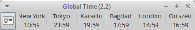

Amateurfunk
Diese Übersichtsseite dient dazu, die verschiedenen Programme für Funkamateure oder andere Funkinteressierte zu bündeln.
Logbuch¶
CQRLOG - ADIF-Logbuch mit TRX-Anbindung, Unterstützung für QSL-Kartendruck, fldigi, LotW, eQSL...
xlog
 - einfaches Logbuchprogramm mit GTK-Oberfläche, in den offiziellen Paketquellen enthalten (Screenshots )
- einfaches Logbuchprogramm mit GTK-Oberfläche, in den offiziellen Paketquellen enthalten (Screenshots )KLog
- Qt-Programm, ebenfalls in den offiziellen Paketquellen enthaltenTucnak
- sehr mächtiges V/U/SHF Contest-Logbuchprogramm, ebenfalls in den offiziellen Paketquellen enthalten
Software Defined Radio (SDR)¶
SDR ist eine Programmgattung, bei der der Rechner in Kombination mit entsprechender Hardware zum Breitband-Empfänger wird.
Gqrx¶
Gqrx ist eine grafische SDR-Software, basierend auf dem "GNU Radio SDR framework" und der Grafikbibliothek Qt. Das Programm unterstützt eine ganze Reihe SDR-Hardware wie zum Beispiel "Funcube" oder DVB-T-Sticks mit Realtek-Chipsatz oder auch "HackRF"- oder "USRP"-Geräte.
Auf der Homepage gibt es eine komplette Liste der unterstützten Hardware, Links zu YouTube-Videos und weitere Hilfestellungen.
SDRSharp/SDR#¶
Die Lauffähigkeit von SDR# kann mit der Mono-Develop-Engine und mit Hilfe dieser Anleitung der RTL-Treiber-Seite hergestellt werden.
Digitalmodes¶
fldigi¶
Fldigi ist hinreichend unter Windows-Nutzern bekannt, dabei liegt es nicht nur in Versionen für Windows oder OSX vor, sondern ist auch in den offiziellen Paketquellen enthalten. Wie auch unter Windows kann es RTTY, PSK (31-128), CW, Olivia, FAX, PSKmail und vieles mehr.
fldigi (universe)
 mit apturl
mit apturl
Paketliste zum Kopieren:
sudo apt-get install fldigi
sudo aptitude install fldigi
WSJT-X¶
WSJT-X ist ein sehr umfangreiches Programm, welches die von Joe Taylor, K1JT entwickelten Digitale-Betriebsarten JT4, JT9, JT65, QRA64, ISCAT, MSK144, sowie WSPR implementiert. Diese Betriebsarten eignen sich z.B für Meteor-Scatter und Erde-Mond-Erde Verbindungen.
wsjtx (universe)
mit apturl
Paketliste zum Kopieren:
sudo apt-get install wsjtx
sudo aptitude install wsjtx
gMFSK¶
Das Programm gMFSK des Finnen Tomi Manninen ist ein "Gnome Multimode HF Terminal" und unterstützt folgende Betriebsarten: MFSK (MFSK16 and MFSK8), RTTY, THROB (1, 2 and 4 throbs/sec), PSK31 (BPSK and QPSK), PSK63, MT63 und Feldhell.
gmfsk (universe)
mit apturl
Paketliste zum Kopieren:
sudo apt-get install gmfsk
sudo aptitude install gmfsk
Xastir¶
Xastir ist ein APRS-Programm (Automatic Packet Reporting System) für Linux. Mit Xastir kann auf OpenStreetMap-Karten z.B. das Tracking von Amateurfunk-Mobilstationen angezeigt werden. Es ist möglich, in Kombination mit einem Raspberry Pi ein einfaches APRS-Getway für APRS-Stationen aufzubauen. Auch können Wetterinformationen über APRS ausgetauscht oder mittels APRS-Messages gechattet werden.
xastir (universe)
mit apturl
Paketliste zum Kopieren:
sudo apt-get install xastir
sudo aptitude install xastir
Weltzeituhr/UTC-Clock¶
Ein Klassiker für die Kommandozeile ist das Programm tzwatch. Außerdem bietet die Programmgattung Desklets eine Vielzahl von Uhren aller Art. Nützlich insbesondere bei grafischen Programmen mit einem eigenen Fenster ist das meist links oder rechts oben vorhandene Fenstermenü: dort sorgt die Einstellung "Immer oberhalb" dafür, dass das Programmfenster im Vordergrund bleibt.
Gworldclock¶
Gworldclock ist quasi eine grafische Oberfläche für tzwatch, das die gleiche Konfiguration wie die Kommandozeilenversion verwendet.
Conky¶
Der Systemmonitor Conky bietet eine fast unüberschaubare Anzahl von Möglichkeiten, Informationen auf dem Desktop anzuzeigen, darunter natürlich auch eine Uhr. Ein Beispiel für die Datei ~/.conkyrc:
1 2 3 4 5 6 7 8 9 10 11 12 13 14 15 16 | background no
update_interval 1.0
own_window yes
own_window_hints undecorated, above
alignment top_right
gap_x 100
gap_y 0
default_color cccccc
TEXT
${time %a %d. %b %k:%M}
UTC ${exec date -u +%H:%M}
LA ${tztime US/Pacific %H:%M}
NY ${tztime America/New_York %H:%M}
GMT ${tztime Europe/London %H:%M}
MEZ ${tztime Europe/Berlin %H:%M:%S}
|
Mit own_window_hints undecorated wird die sonst übliche Fensterdekoration unterdrückt, above holt die Anzeige in den Vordergrund. So kann auch ein Logbuchprogramm die Uhr nicht verdecken. gap_x 100 sorgt wiederum dafür, dass die Schaltflächen zum Schließen von Fenstern/Programmen nicht überdeckt werden. Weitere Konfigurationsmöglichkeiten wie durchsichtiger Hintergrund, Farben usw. sind im separaten Artikel zum Programm nachzulesen.

Orage¶
Eine weitere Alternative ist das bei Xubuntu vorinstallierte Programm Orage. Dieses kann auf zwei unterschiedlichen Wegen genutzt werden: entweder als Panel-Applet innerhalb der Desktop-Umgebung Xfce oder als eigenes Programm über den Menüeintrag "Zubehör -> Orage Globaltime".
Bei der Verwendung als Panel-Applet kann nur jeweils eine Zeitzone angezeigt werden. Das kann man umgehen, indem man Orage mehrfach dem Panel hinzufügt und die einzelnen Instanzen entsprechend konfiguriert.
Links¶
Linux Amateurfunk-Software
 - weitere Informationen und Screenshots
- weitere Informationen und ScreenshotsProgramme - die in den offiziellen Paketquellen enthalten sind
The BIG List of RTL-SDR Supported Software
- plattformübergreifende Liste von SDR-ProgrammenFrei zugängliche WebSDR
- benötigt JavaFreeDV
- Digital Voice über Ham RadioCodec 2
- Sprachcodec für HF/VHF-Digitalradio
- Erstellt mit Inyoka
-
 2004 – 2017 ubuntuusers.de • Einige Rechte vorbehalten
2004 – 2017 ubuntuusers.de • Einige Rechte vorbehalten
Lizenz • Kontakt • Datenschutz • Impressum • Serverstatus -
Serverhousing gespendet von